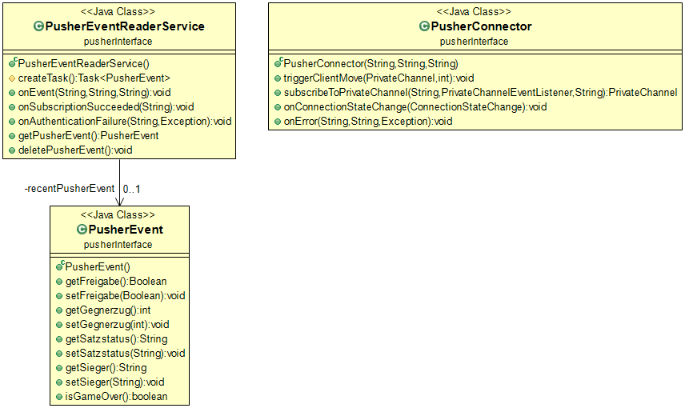

<body>
Das <code>pusherInterface</code> Package enthält die Java-Klassen zur Kommunikation mit dem Server 
über die Pusher-Schnittstelle.

<br>
	<figure>
		
		<figcaption>Klassenstruktur des Packages</figcaption>
	</figure>
</body>